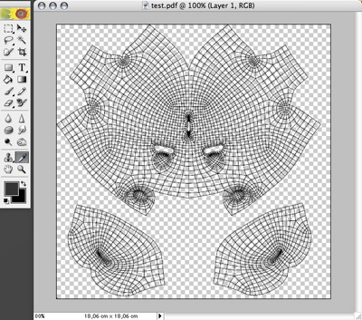

Save UV's to PDF Tool
The Paint tool of Cheetah3D should allow you to do the most of your texture painting work directly in Cheetah3D. But Cheetah3D could never be a total replacement of specialized 2D painting and image processing tools. So sometimes you might which to paint or polish up some textures with an another app.
Since texture painting without the UV mesh is quite tricky you can export the UV coords to a PDF file with this tool. Later you can import this PDF to any other painting app and use it as a stencil.
UV mesh in Cheetah3D

UV Mesh loaded into Photoshop
Modes
This tool can be only applied to polygon objects.


To use the "Save UV's to PDF" tool, select a polygon object. Please make sure with the UV editor, that all UV coords of the selected object are within the range [0,1]. Otherwise the UV coords will be scaled wrongly when you import the PDF later into a image processor. Now perform the "Save UV's to PDF" tool and enter the filename of the PDF.
Keys
- none
Properties
- none